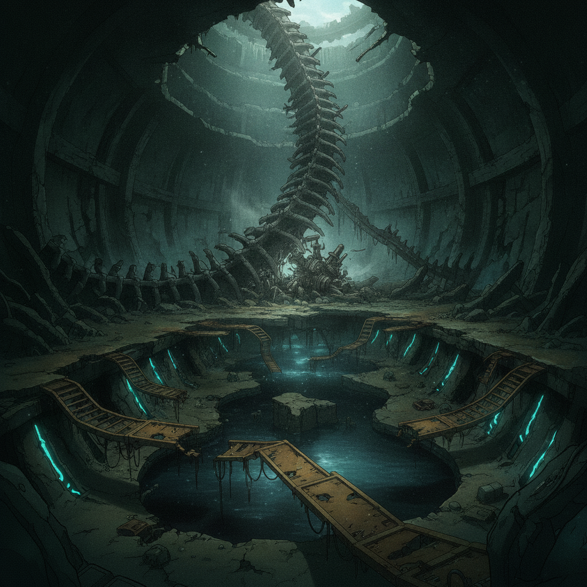
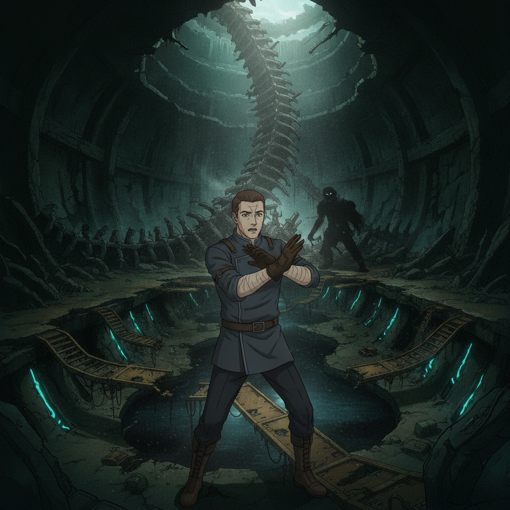
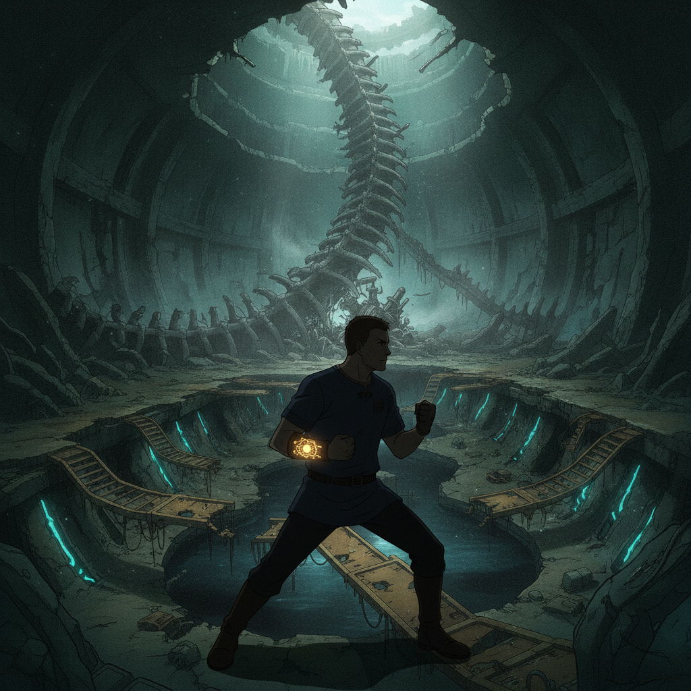
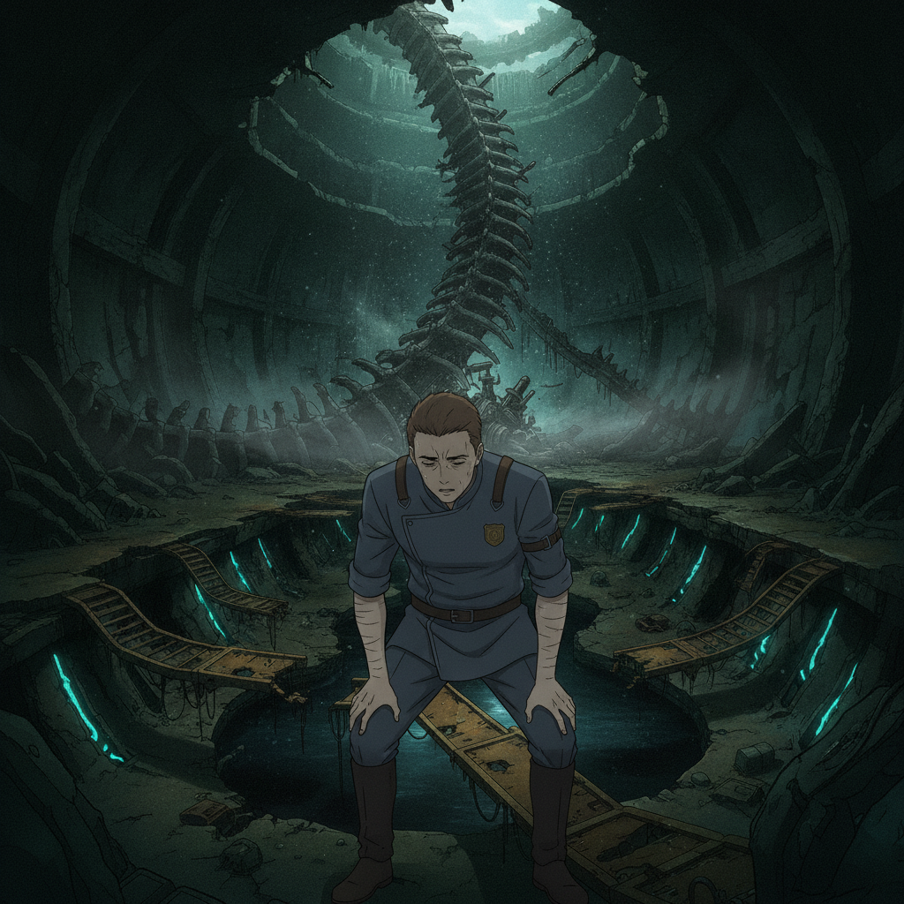

The ruins interior is a maze of buckled service tunnels. The hum of the failed weave is unnervingly present. Then the silence breaks — shouts, the clash of metal on stone. We are ambushed.

Gideon Marsh“Assayers! How did they—?”
The test has turned deadly.

I keep to Isolde. Her precision wins where recklessness would fail — her Sela-strong weave finds the weak seams in their assault and opens a way through. I catch a flicker of distress on her face; she has broken some unspoken rule of her own.

We emerge, battered but victorious. The air tastes of ozone and fear.